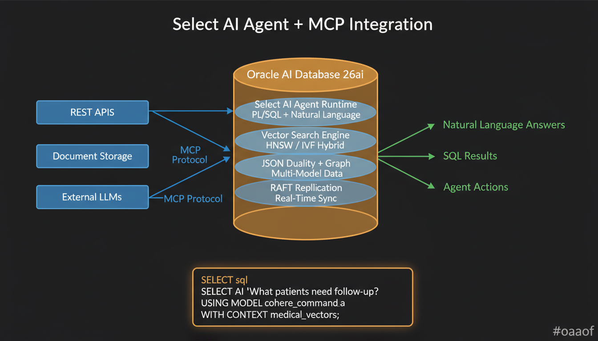

Oracle AI Database 26ai:
The Database-Native AI Paradigm
The most radical shift in enterprise AI isn't a new model or framework—it's moving AI execution inside the database. Oracle AI Database 26ai eliminates the API-call architecture entirely: vector search, agent execution, and LLM routing happen where the data lives. Zero data movement. Zero network latency. Zero external dependencies for inference.
The Paradigm Shift: Why Database-Native AI?
Every major AI architecture today follows the same pattern: extract data from the database, send it to an external service (embedding model, LLM, vector store), wait for a response, and write results back. This extract-process-return pattern introduces latency, security exposure, and operational complexity at every step.
Oracle AI Database 26ai inverts this pattern entirely. Instead of moving data to AI, it moves AI to the data. Select AI Agent runs LLM inference directly from SQL. Unified Hybrid Vector Search combines semantic, keyword, and structured queries in a single SQL statement. JSON Duality Views present relational data as documents for AI consumption without ETL.
The traditional RAG pipeline requires 5-7 network hops: app → embedding API → vector DB → reranker → LLM → app → DB. With database-native AI, this collapses to 1 SQL call. The database IS the vector store, the embedding engine, and the agent runtime. This isn't optimization—it's elimination of an entire architectural layer.
Traditional vs. Database-Native Architecture
| Aspect | Traditional RAG | Database-Native AI (26ai) |
|---|---|---|
| Data movement | Extract → Transform → Load to vector DB | Zero—data stays in place |
| Vector search | Separate service (Pinecone, Weaviate, etc.) | Built-in HNSW/IVF indexes |
| Hybrid queries | Orchestrate multiple APIs, merge results | Single SQL: vector + keyword + filter |
| Agent execution | External framework (LangChain, CrewAI) | Select AI Agent (in-DB, PL/SQL) |
| Security model | Data leaves DB, exposed to APIs | Data never leaves; DB-level RBAC |
| Consistency | Eventual (sync lag between DB and vector store) | ACID—vectors are just another column |
| Network hops | 5-7 per RAG query | 1 (SQL call) |
Select AI Agent: In-Database AI Execution
Select AI Agent is the most significant innovation in Oracle AI Database 26ai. It allows you to write natural language queries directly in SQL, and the database handles everything: parsing intent, selecting the appropriate AI model, constructing prompts, executing inference, and returning results—all within the database process.
How Select AI Agent Works
Under the hood, Select AI Agent is a PL/SQL-based agent runtime that integrates with OCI GenAI Service.
When you issue a SELECT AI statement, the database:
- Parses the natural language query using the configured AI profile
- Determines the execution strategy—does this need vector search, SQL generation, or direct LLM response?
- Executes locally where possible—vector searches run entirely in-process using existing indexes
- Routes to external models via MCP only when complex reasoning is required
- Returns results as standard SQL result sets—no special client-side parsing needed
The key insight: AI agent behavior becomes a database configuration concern, not an application concern. DBAs can tune AI profiles (temperature, model selection, vector index routing) the same way they tune query plans. This means enterprises can enforce AI governance at the database level—which models are allowed, what data is accessible, what response patterns are permitted—using the same RBAC infrastructure they already trust.
MCP Integration: The Universal Agent Protocol
Oracle AI Database 26ai integrates with the Model Context Protocol (MCP) as both a client and a server. As an MCP client, the database's Select AI agents can invoke external tools—REST APIs, document stores, other databases. As an MCP server, external agents (Claude Code, VS Code Copilot, custom orchestrators) can query the database using natural language.
This bidirectional MCP integration is particularly powerful for Oracle Integration Cloud (OIC), which enables one-click conversion of any existing integration flow into an MCP server. This means every business process already connected through OIC—ERP, CRM, HR systems—becomes immediately accessible to in-database AI agents.
| MCP Role | Capability | Use Case |
|---|---|---|
| DB as MCP Client | Agents call external tools via MCP | In-DB agent triggers Slack notification, creates Jira ticket |
| DB as MCP Server | External agents query DB naturally | Claude Code asks "show me revenue by region" → gets SQL results |
| OIC MCP Bridge | Any OIC integration becomes MCP tool | Agent triggers ERP workflow without custom API code |
Unified Hybrid Vector Search
The most common failure mode in production RAG systems is retrieval quality. Semantic search alone misses exact matches. Keyword search alone misses conceptual relevance. Metadata filters are essential but require a separate query path. Most production systems cobble together 2-3 search systems and merge results in application code.
Oracle AI Database 26ai solves this with Unified Hybrid Vector Search—a single SQL statement that combines semantic vector similarity, full-text keyword matching, and structured SQL filters. The database optimizer handles the fusion strategy automatically, using reciprocal rank fusion (RRF) or weighted scoring.
Vector Index Types
HNSW (Hierarchical Navigable Small World)
Best for: Low-latency, high-recall queries. Creates a multi-layer proximity graph. Sub-millisecond search at 95%+ recall. Memory-resident for hot data.
approximate in-memory <1msIVF (Inverted File Index)
Best for: Large-scale datasets where memory is constrained. Partitions vectors into clusters, searches only relevant partitions. Disk-friendly for cold data.
approximate disk-based scalableHybrid Fusion
Best for: Production RAG with complex retrieval needs. Combines vector similarity + BM25 keyword + SQL WHERE in one query. Reciprocal Rank Fusion merges results.
hybrid RRF productionIn a traditional architecture, this single query would require: (1) calling an embedding API to vectorize the query, (2) querying a vector database like Pinecone, (3) querying Elasticsearch for keyword matches, (4) running a SQL query for metadata filters, (5) merging results in application code. That's 5 services, 5 latency penalties, 5 failure points. Oracle 26ai reduces this to a single SQL statement executed in the database process.
JSON Duality Views: The Multi-Model Bridge
AI applications consume data as documents (JSON). Enterprise data lives in relational tables. This impedance mismatch traditionally requires ETL pipelines, ORMs, or application-layer serialization. JSON Duality Views in 26ai solve this by presenting relational data as JSON documents without duplication.
A JSON Duality View is a virtual document that maps to underlying relational tables. When an AI agent reads a patient record, it gets a rich JSON document. When a clinician updates a field through the traditional application, the change is immediately visible to the AI agent. One truth, two access patterns.
Novel pattern: Use JSON Duality Views as pre-structured context windows for AI agents. Instead of building complex prompt templates that query multiple tables, define a Duality View that presents exactly the information an agent needs for a specific task. The view acts as a curated, always-consistent, ACID-guaranteed context window. Different agents get different views of the same data—the oncologist agent sees treatment history, the research agent sees biomarkers and outcomes, the compliance agent sees consent and audit trails.
Property Graph: Relationship Intelligence
Vector search finds similar items. SQL finds structured facts. But neither captures relationships— the connections between entities that often hold the most valuable intelligence. Oracle AI Database 26ai supports SQL/PGQ (Property Graph Query) natively, allowing graph traversals alongside vector and relational queries.
For AI workloads, property graphs enable GraphRAG—retrieval augmented generation that follows relationship paths rather than just similarity scores. When a clinical AI agent asks "What treatment worked for patients similar to this one?", the answer requires traversing patient → diagnosis → treatment → outcome → similar-patient relationship chains. Vector search alone can't express this.
Enterprise-Grade: RAFT Replication & Quantum-Safe Encryption
RAFT Consensus Replication
Oracle 26ai introduces RAFT-based replication for real-time data synchronization across distributed deployments. For AI workloads, this means vector indexes, agent profiles, and knowledge bases can be replicated across regions with strong consistency guarantees. When a new document is embedded and indexed in one region, it becomes searchable in all regions within seconds—not minutes or hours like eventual consistency systems.
Quantum-Resistant Encryption
With quantum computing advancing rapidly, Oracle 26ai includes quantum-resistant encryption algorithms for data at rest and in transit. This is critical for healthcare, defense, and financial AI workloads where data encrypted today must remain secure for decades. The encryption is transparent to applications—AI agents and vector searches work identically; the quantum resistance is handled at the storage and transport layers.
RAFT Replication
Consensus-based replication for distributed AI workloads. Strong consistency across regions. Real-time vector index synchronization.
distributed consistentQuantum-Safe Encryption
Post-quantum cryptographic algorithms. Protects data against future quantum attacks. Transparent to applications and AI agents.
post-quantum transparentZero Data Movement
AI executes where data lives. No extraction, no external vector stores, no API-exposed sensitive data. The ultimate security architecture.
in-database secureMigration: 23ai to 26ai
The migration from Oracle Database 23ai to Oracle AI Database 26ai is deliberately simple: apply the October 2025 Release Update. No data migration, no schema changes, no application rewrites. Existing vector indexes, JSON Duality Views, and AI profiles continue to work. New capabilities (Select AI Agent, RAFT, quantum encryption) are opt-in additions.
The official branding is "Oracle AI Database 26ai" (not "Oracle Database 26ai" or "Autonomous Database 26ai"). The autonomous version is branded "Autonomous AI Database". Premier Support runs through December 31, 2031. Documentation: docs.oracle.com/en/database/oracle/oracle-database/26/nfcoa/
Sources & References
- Oracle AI Database 26ai New Features — docs.oracle.com
- Oracle AI Vector Search Documentation — docs.oracle.com/vecse
- Oracle Select AI Documentation — docs.oracle.com/select-ai
- JSON Duality Views — docs.oracle.com/jsnvu
- SQL/PGQ Property Graph — docs.oracle.com/property-graph
- Model Context Protocol — modelcontextprotocol.io
- Oracle Integration Cloud MCP — oracle.com/integration
- HNSW vs IVF Index Comparison — Malkov & Yashunin, 2018, "Efficient and robust approximate nearest neighbor search"
- Reciprocal Rank Fusion — Cormack et al., "Reciprocal Rank Fusion outperforms Condorcet and individual Rank Learning Methods", SIGIR 2009
- Oracle OCI Pricing — oracle.com/cloud/price-list (always verify current pricing)